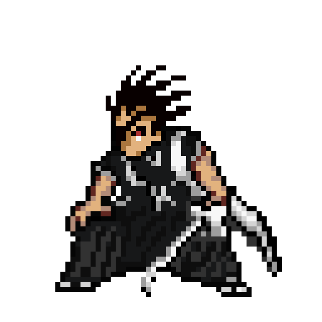
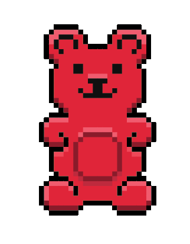
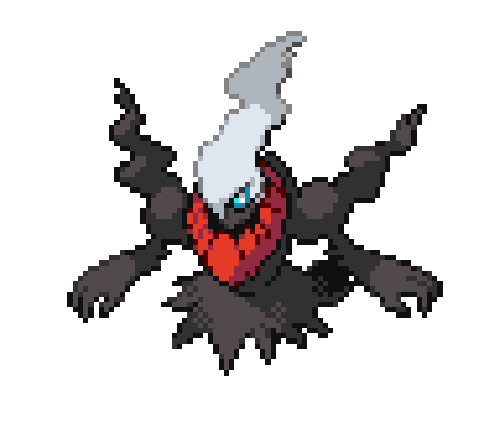
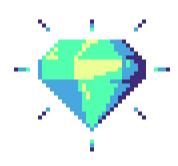
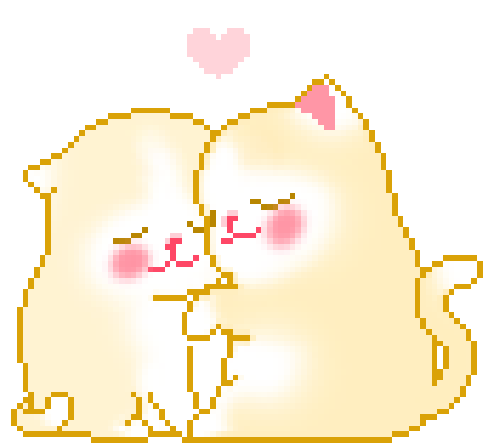
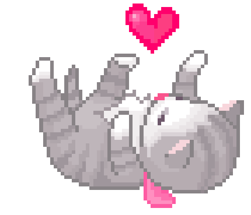
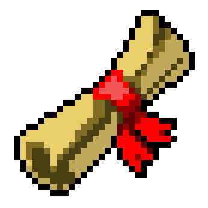

He conocido a una persona muy bonita por poco más de tres meses y ha sido lindo. Un poco inusual, pero ha hecho mi vida un poquito más feliz.
Soy muy malo aprendiendo cosas puntuales sobre personas, pero si tuviese que resumir un poco sobre él:
- Le gusta Hora de aventura, South Park, Bleach y su personaje favorito es Kenpachi. 
- Le gustan las gomitas. 
- Su Pokémon favorito es Darkrai. 
- A todo le quiere poner “pico de gallo”.
- Es bueno para aprender fechas y nombres en general.
- Detalla cosas que los demás no, atesora cosas pequeñas y le pone lógica a todo. 
- Le gusta que le demuestre cariño tocándole la oreja y el pelo. 
- Es sentimental y llorón.
- Es muy consentidor. 
- Le gusta cuando digo “sabroso”.
- Le gusta cocinar y algún día me gustaría probar sus comidas.
- Es muy atento y me pregunta sobre las cosas que pienso.
- Tiene un crush con María Concepción Loperena.
- Y sobre todo, le gustan las guerras, los mapas, la historia y es muy bueno en eso. 

Espero poder seguir conociéndote y que me conozcas más a mí. Feliz cumpleaños para ti, Luis. Te quiero <3